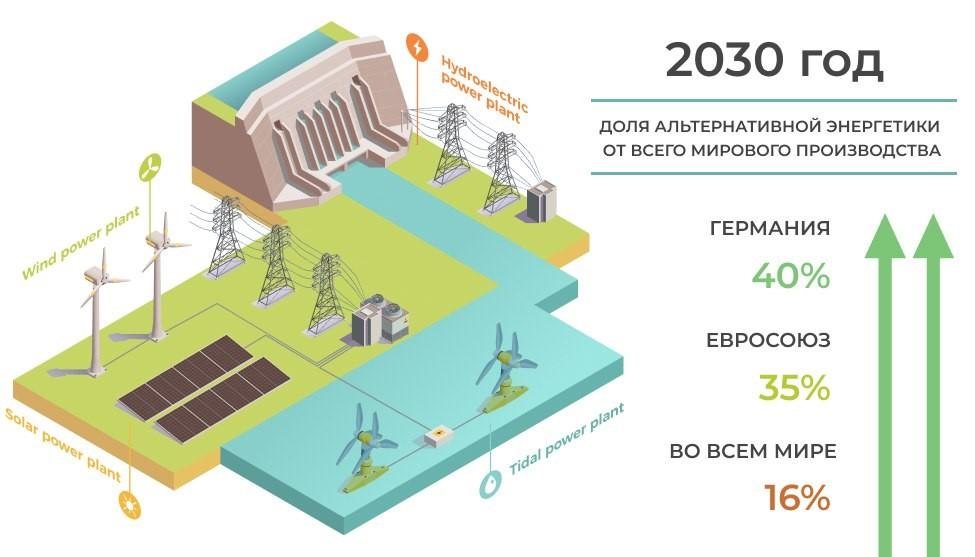

Перечинский лесохимический комбинат с мыслью о будущем: переход на альтернативные источники энергии как необходимость сохранения планеты

Мир вокруг нас меняется с невероятной скоростью: развиваются технологии, появляются новые научные открытия, производители приходят к выводу, что экологичность производства, поиск альтернативных источников энергии - это не просто "фишка", модный тренд или принципиальная позиция владельца, а необходимое условие сохранения планеты для будущих поколений.
Мировое сообщество переходит на альтернативные источники энергии: будущее уже наступило! А что в Украине?
Ведущие мировые производители промышленной продукции пытаются сполна использовать энергию солнца, ветра и воды, биогазовых и вторичных энергетических ресурсов, волн и приливов, газа из органических отходов и канализационно-очистных станций и т.д. - все для рационального использования ресурсов и охраны окружающей среды.
Ведущие ученые работают и над тем, чтобы как можно эффективнее использовать и вторичные энергетические ресурсы - доменный и коксовый газы, метан из угольных месторождений, выбросной энергопотенциал технологических процессов и тому подобное.
Международное энергетическое агентство прогнозирует, что доля альтернативной энергетики составит около 16% от всего мирового производства до 2030 года, Европейский отраслевой союз возобновляемых источников энергии называет еще большую цифру - до 35%. Ведущие специалисты утверждают: за альтернативными источникам энергии - будущее человечества!
В Германии, одной из стран-лидеров по использованию альтернативных источников энергии, доля возобновляемой энергетики может составить 40%, а в производстве электрической - около 67%, предусматривает Федеральный союз возобновляемых источников.
В прошлом году и на базе Перечинского лесохимического комбината было основано научно-исследовательскую лабораторию для поиска и использования альтернативных источников энергии.
Сотрудничество Перечинского лесохимического комбината с Технологическим институтом Карлсруе
В декабре 2019 года на базе комбината начала работу научно-исследовательская лаборатория, где специалисты ПЛХК совместно с сотрудниками известного в Европе Технологического университета Карлсруе (Германия) работают над крайне важными задачами, в частности:
- технологии получения дополнительной энергии из отходов производства древесного угля. Ее планируется направлять не только на нужды производства, но и создание новой продукции;
- технологии получения из древесины полезных химических соединений естественным способом. Речь идет, в основном, об изъятии таких соединений из пиролизных газов. И это ведущая мировая тенденция!
На предприятии искренне гордятся тем, что делают вклад в защиту окружающей среды вместе со старейшим технологическим вузом Германии - безусловным авторитетом в деле экологичности производства.
Перечинский лесохимический комбинат идет в ногу со временем: признание клиентов и специалистов-экологов
Соблюдение высоких стандартов качества и экологических принципов производства сделало Перечинский лесохимический комбинат надежным партнером крупных зарубежных компаний - крупнейших в Европе заводов по производству активированного угля, мировых лидеров по производству кремния, производителей металла.
Также продукцию можно найти в крупнейших европейских торговых сетях - LIDL, Kaufland, Carrefour, EDEKA, TESCO. Комбинат работает по стандартам BSCI, PEFC, ISO.
Современные способы промышленного производства угля на Перечинском лесохимической комбинате: когда экологичность - это аксиома!
В производстве древесного угля ОДО "Перечинский лесохимический комбинат" использует исключительно топливные дрова. Все сырье сертифицировано надлежащим образом.
Сам процесс производства происходит в двух вертикальных ретортах и он абсолютно автоматизирован. Это позволяет специалистам тщательно контролировать химические показатели - содержание золы, влажность, содержание летучих веществ и т.д.
Причем процесс имеет замкнутый цикл: органические соединения, образованные в результате сгорания, утилизируются в специальном котле, предоставляя необходимую для производства энергию. То есть, производство не только не загрязняет окружающую среду, но и само себя обеспечивает необходимым энергетическим ресурсом.
Такой вектор развития выбран вовсе не для признания международными экспертами и не в погоне за мировыми трендами, а с мыслью о будущих поколениях и сохранение экологии в глобальном масштабе.